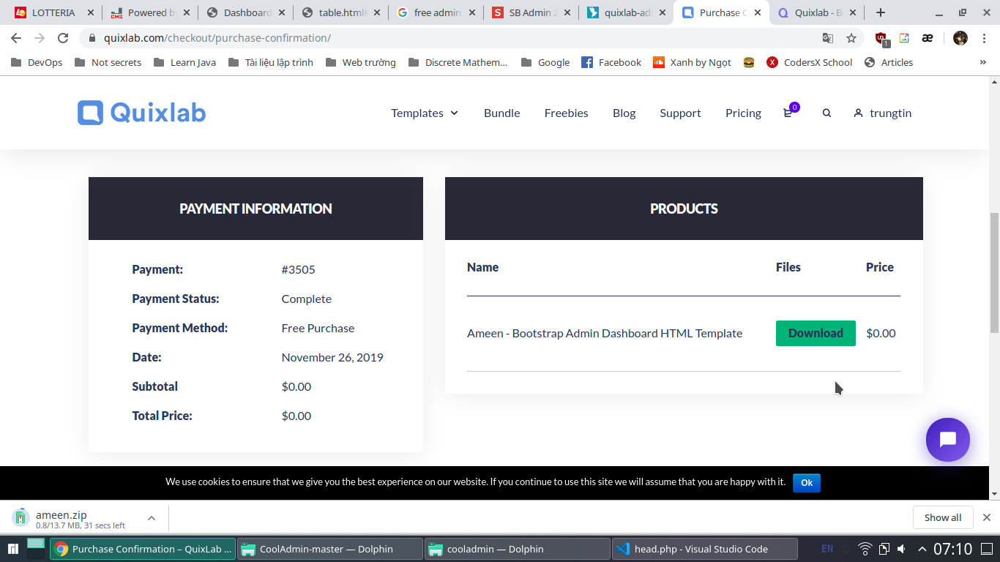
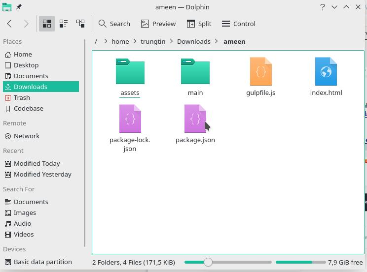
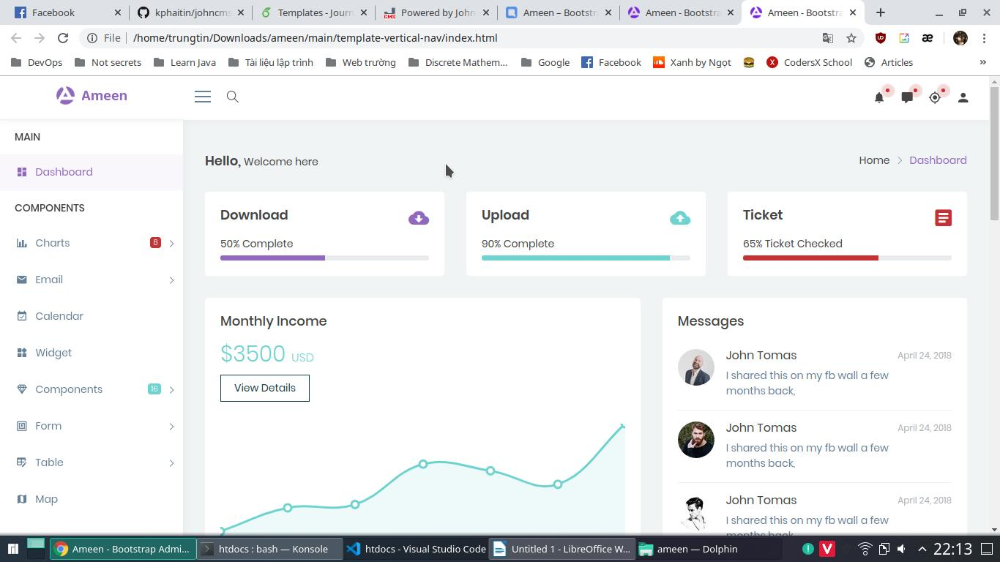
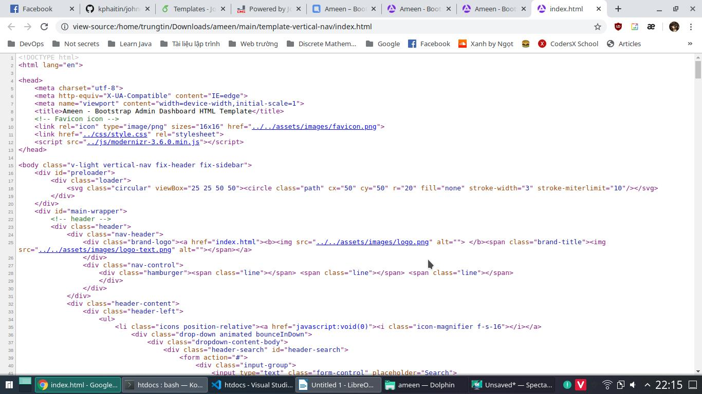
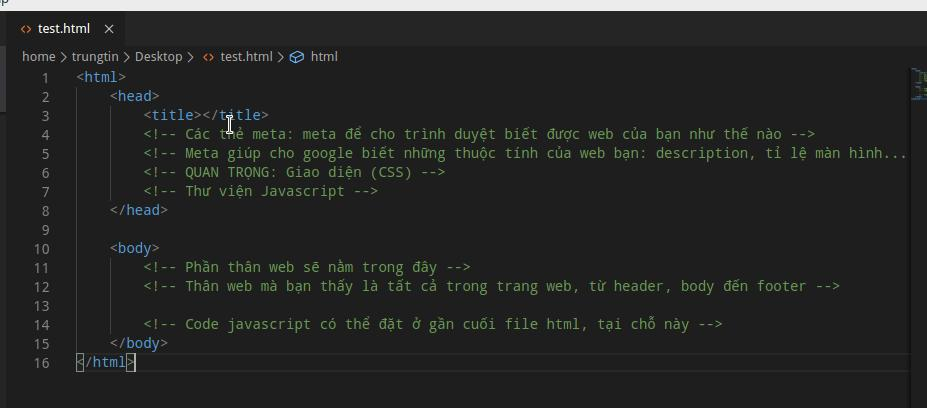
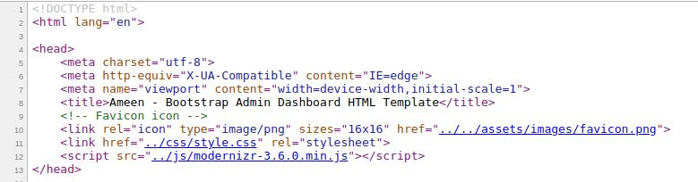
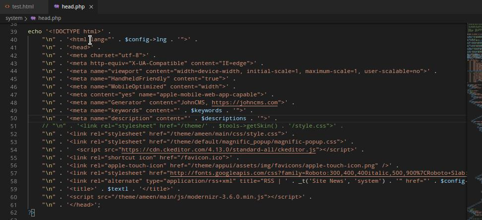
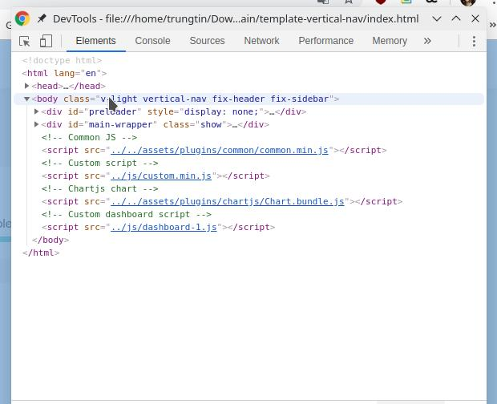
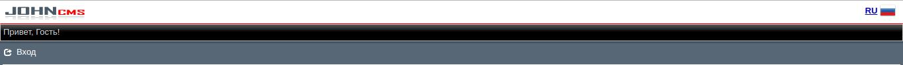
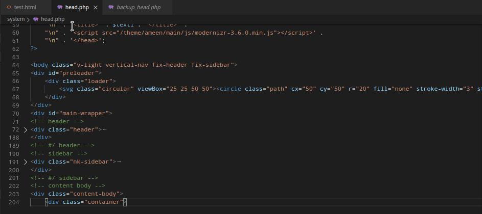

Giao diện
Bước 1: Tìm giao diện
Nhóm tìm được một giao diện miễn phí, tên là Ameen, bạn có thể xem thông tin ở link dưới:
https://quixlab.com/product/ameen-bootstrap-admin-dashboard-html-template/
Demo link dưới:
https://quixlab.com/demo/ameen/main/template-vertical-nav/index.html
 Ảnh thanh toán giao diện
Qua việc tải giao diện chúng ta có được một file nén trong đó có

Mở file index.html, ta sẽ thấy một trang web như trang demo vừa nãy
 Ta sử dụng chuột phải, chọn View source để xem mã nguồn

Tại đây, bạn sẽ thấy rất nhiều dòng html, nhưng trên tổng thể, một trang web sẽ chia ra các phần như thế này.
 Đọc thông tin trong ảnh để hiểu hơn về cấu tạo cơ bản của một trang web.
Ok -> Giờ ta sẽ bắt đầu chuyển giao diện. Để có một giao diện, bạn cần cho file css tương ứng vào file header của JohnCMS.
Ở JohnCMS 7.0, header được đặt trong /systems/head.php.

Trên source, bạn thấy ở giữa 2 thẻ <head> </head> chỉ có một cái css, bạn edit vào file header johncms.
 Ở đây, JohnCMS cũng sử dụng một số css riêng của nó, nếu không biết thì không nên động vào. Mình chỉ add/remove sao cho đầy đủ như web demo
Hãy nhìn tổng thể cấu trúc của trang web demo qua Dev Tool
 Có thể thấy, cả <body> được bao bọc bởi các class như “v-light vertical....” nhưng bạn không cần biết, chỉ việc edit code của mình cho giống là được rồi.
Tuy nhiên JohnCMS cũng có một cái header mặc định khá xấu, bạn cũng cần phải xóa nó đi. Nó như thế này:
 Trong file head.php, nó là thế nào thì mời bạn xem file system/head_backup.php.
Ở phần footer ta thêm/xóa tương tự như head.
Chúng ta sử dụng công cụ Inspect Element của trình duyệt để tìm component cần thiết.
Rồi lại Copy Paste, sau khi làm đủ kiểu đuôi file head sẽ như thế này:

Trong đó, ?> là để đóng code php, nghĩa là bạn có thể viết html mà không cần dùng echo ‘ ‘;
<?php là mở code php, trái ngược với ?>